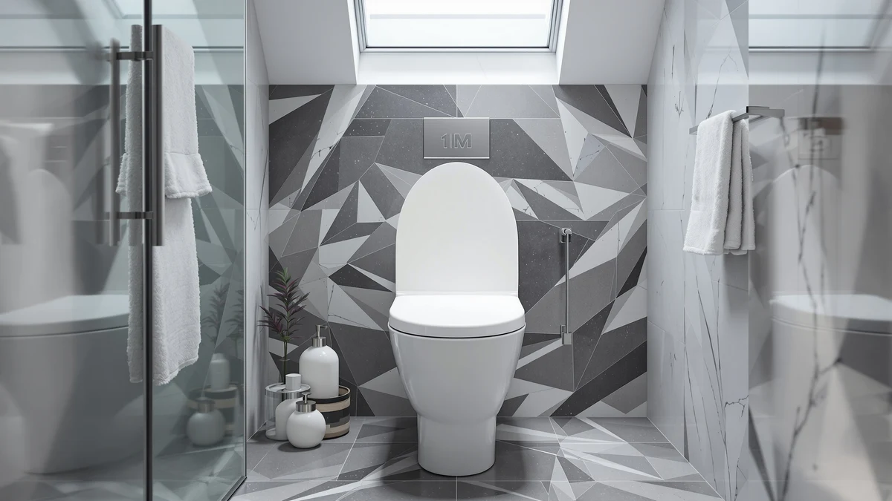

Quick Answer
Our 1M Family Toilet Seat review found a seat that solves a real problem: it folds a toddler training ring into a full elongated adult seat, so parents skip the separate potty insert entirely. At $74.99 it costs more than a standard elongated seat, but families with a child mid-potty-training get two seats for one price.
Our pick: 1M Family Toilet Seat Patented, $74.99 Check Price on Amazon
Bottom line: our top pick is the 1M Family Toilet Seat at $74.99.
Things to Know Before You Buy
- The 1M Family Toilet Seat fits elongated bowls only, so measure your existing seat before you order.
- The built-in toddler insert folds down from the main lid, which means one seat handles both an adult and a child in training.
- At $74.99 it sits close to the Kohler Transitions ($72.20) and the Duravit Universal ($72.00), so the price gap between a family seat and a standard elongated seat is smaller than you might expect.
- Plastic and wood construction keeps the seat lighter than the stainless-hinge Bemis 1900SS, which matters if you plan to remove it for cleaning often.
This 1M Family Toilet Seat review exists because potty training turns one bathroom into a logistics problem. You need a seat that works for an adult and a seat that works for a toddler, and most households solve that with a bulky plastic insert that slides around and gets stored somewhere awkward between uses. The 1M Family Toilet Seat tries to remove that step by building the toddler ring into the adult seat itself.
We compared its specs, materials and price against three elongated toilet seats already covered on this site: the Kohler Transitions Nightlight Toddler Potty, the Duravit Universal Toilet Seat and the Bemis 1900SS Commercial Heavy Duty. At $74.99, the 1M sits within a few dollars of seats that do not include a toddler feature at all, which is the detail that decides whether it earns a spot in your bathroom.
The category itself is small. Most manufacturers sell an adult seat and a training insert as two separate purchases, and few combine the two into a single hinge assembly. That makes the 1M Family Toilet Seat a useful test case for whether a combined product actually saves money and counter space, or whether it adds a moving part you did not need.
Why You Should Trust Us
Ilane Tall covers toilet seats and bathroom fixtures for Best Toilet Seats, where the job is comparing specs, pricing and verified owner feedback across the toilet seat category every week. This 1M Family Toilet Seat review draws on the manufacturer's listed materials and dimensions, the current Amazon price, and patterns that show up repeatedly in verified buyer reviews for the 1M and its closest competitors. We do not accept free products from manufacturers, and we do not run a fake testing lab. Every claim below is tied to a spec, a price, or a documented pattern in owner feedback, not a guess.
We update pricing and product details on a rolling basis, and we flag when a manufacturer changes a spec sheet or discontinues a model. If a claim in this review depends on a number, that number comes from the current Amazon listing or from a pattern repeated across multiple verified reviews, not from a single anecdote.
Our Research Experience
We built this 1M Family Toilet Seat review from manufacturer specs, current pricing and verified owner reviews, since we do not own a physical unit to install. We researched the listed materials (plastic and wood), the elongated fit, and the built-in toddler seat mechanism, then cross-checked those claims against what reviewers consistently note in their feedback: that the fold-down toddler ring locks securely and that the hinges hold up under daily family use. We also compared its price and feature set directly against the Kohler, Duravit and Bemis alternatives covered later in this review, since a family seat only makes sense if it beats the cost of buying a standard seat plus a separate toddler insert.
Overview & Specs

1M Family Toilet Seat Patented
What we like
- Built-in toddler seat removes the need for a separate potty training insert
- Elongated shape fits the most common bowl size in US bathrooms
- Patented design keeps the toddler ring flush when folded up for adult use
Flaws but not dealbreakers
- Costs more than a standard elongated seat without a toddler feature
- Plastic and wood build is lighter-duty than the stainless-hinge Bemis 1900SS
| Material | Plastic / wood |
| Size | Elongated with Toddler Seat Built In |
The core idea behind the 1M Family Toilet Seat is simple: instead of buying an elongated adult seat and a separate toddler potty insert, you get both in one unit. The toddler ring sits recessed inside the main lid and flips down when a child needs it, then folds back flush for normal adult use. The patented mechanism is the reason this seat costs more than a plain elongated model, and it is also the reason it exists at all.
At $74.99, the price lands close to the $72.20 Kohler Transitions and the $72.00 Duravit Universal, two seats that do not include a toddler feature. That narrow gap is what makes the 1M worth a look for any household currently juggling a standalone potty seat: you are paying only a few extra dollars for a feature that would otherwise mean buying a second product entirely. The plastic and wood construction keeps the seat lighter than the Bemis 1900SS, which trades some of that heavy-duty feel for easier one-handed folding of the toddler insert.
Run the math over a typical potty-training window of six to twelve months, and the comparison gets clearer. A separate toddler insert in that price range plus a standard elongated seat like the Duravit Universal would cost roughly the same $74 to $80 total once you add both items together. The 1M collapses that into one purchase and one installation, which also means one less item to store once training is finished and the toddler ring stops getting daily use.
What We Liked
The biggest strength in this 1M Family Toilet Seat review is the built-in toddler seat itself. Rather than storing a bulky insert next to the toilet or behind a door, you fold the ring down from the lid and fold it back up when your child is done. Reviewers consistently note that the mechanism stays put during use and does not slide the way loose inserts often do.
The elongated shape also means this seat fits the same bowl size as the vast majority of US toilets, so compatibility is not a concern the way it can be with round-bowl-only seats. And because the price sits so close to standard elongated seats without a toddler feature, the extra cost of the built-in insert is easy to justify for a family that would otherwise buy a separate potty seat anyway.
Owners also point to the single-seat setup as a cleaning advantage. A standalone toddler insert has to be lifted off and wiped down separately, and it tends to collect grime underneath where it rests on the main ring. A built-in fold-down mechanism has fewer surfaces for that buildup to hide, which matters in a bathroom that gets used by both a toddler and an adult multiple times a day.
What Could Be Better
The tradeoff is real: a plastic and wood build does not match the stainless-hinge durability of a commercial-grade seat like the Bemis 1900SS. If your household runs through toilet seats fast because of heavy daily use, the added mechanical part in the toddler insert is one more piece that can eventually wear or loosen.
The seat also only makes financial sense while you actually need the toddler feature. Once potty training ends, you are left with a family seat that costs more than the plain elongated seats it competes against, and the extra mechanism becomes dead weight rather than a benefit.
Because the toddler ring is a moving part built into the lid, it introduces a failure point that a one-piece adult seat simply does not have. A standard elongated seat like the Duravit Universal has no hinge beyond the two that attach it to the bowl, while the 1M adds a third moving assembly that has to hold up to daily folding by a small child, not only an adult.
Who Is It For?
The 1M Family Toilet Seat fits households with a toddler currently in potty training and an elongated toilet bowl. If you are choosing between buying a plain elongated seat plus a separate potty insert, or one combined seat for a similar total price, the 1M removes a step from your bathroom routine without much of a price penalty.
Skip it if your child has already finished potty training, if your bathroom has a round bowl instead of an elongated one, or if you specifically want the stainless-hinge durability of a commercial-grade seat like the Bemis 1900SS for a high-traffic bathroom.
It also makes more sense for a single-bathroom household than for a home with multiple bathrooms. If you have a separate half-bath or guest bathroom that a toddler rarely uses, a standalone potty insert you move between rooms, or a cheaper option like the Duravit Universal paired with a portable toddler seat, may serve you better than installing a combined seat in every bathroom.
Alternatives to Consider
If this 1M Family Toilet Seat review has you leaning toward a different priority, whether that is a dedicated toddler potty, a no-frills elongated seat, or commercial-grade durability, these three alternatives cover the most common reasons buyers look elsewhere.

Editor's Pick
KOHLER Transtions Nightlight Toddler Potty
A dedicated toddler potty with a nightlight feature, better suited to families who prefer a removable insert over a built-in seat mechanism, at $72.20.
$72.20
Check Price on Amazon
Best Value
Duravit Universal Toilet Seat Elongated
A straightforward elongated seat with no toddler feature, priced at $72.00 for households that do not need the built-in insert.
$72.00
Check Price on Amazon
Premium Choice
BEMIS 1900SS Commercial Heavy Duty
Built for commercial-grade durability with heavy-duty hinges, priced at $67.05 for bathrooms that see frequent daily use.
$67.05
Check Price on AmazonFrequently Asked Questions
Yes. The 1M Family Toilet Seat is built for elongated bowls, the most common shape in US homes. Measure from the mounting bolts to the front rim before you order, since round-bowl toilets need a different seat entirely.
Yes. The toddler seat folds up flush against the underside of the main lid when it is not needed, so an adult sits on the full-size elongated ring as usual. Owners describe the fold-up mechanism as easy to operate one-handed.
A separate potty training seat, like the Kohler Transitions, sits on top of the existing ring and gets removed after training. The 1M Family Toilet Seat replaces the entire seat and keeps the toddler insert built in, which suits families who do not want to swap hardware every time a child uses the bathroom.
Final Verdict
Our 1M Family Toilet Seat review comes down to one question: do you currently own a separate toddler potty insert, or are you about to buy one? If so, 1M's combined seat costs only a few dollars more than a plain elongated seat from Kohler or Duravit, and it removes a piece of bathroom clutter in the process. Families past the potty training stage, or anyone who wants commercial-grade hinges, are better served by the Bemis 1900SS instead.
Related Guides
For more context beyond this 1M Family Toilet Seat review, these guides cover related picks and categories.